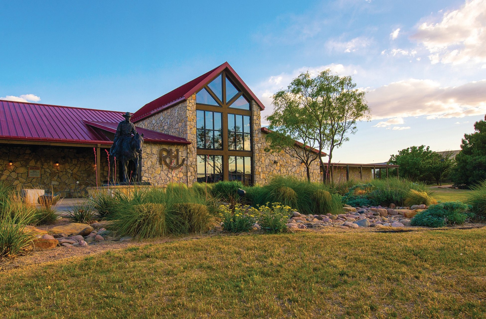

- Civic Lubbock, Inc. Announces 2017 West Texas Walk of Fame Inductees
- CRAFT: Soul Collage Workshop and Open Studio with Deborah Milosevich on Sep 2 & Nov 14
- Mayor Encourages Citizens to Take Community Survey
- Closure of Joliet Avenue Between 22nd Street and 22nd Place
- Mayor Encourages Citizens to Take Community Survey
Featured News

The 17th Annual Heritage Halloween is coming to the National Ranching Heritage Center
Upcoming Events
October 05
Reel Books Book Club
7:00–8:00 PM
Groves Branch5520 19th St
Lubbock, TX 79407
October 06
CelebracIÓn Opens at the Buddy Holly Center
10:00 AM–5:00 PM
buddy holly center5520 19th St
Lubbock, TX 79407
October 06
First Friday Art Trail
6:00–9:00 PM
LHUCA511 Ave. K
Lubbock, TX 79407
October 06
First Friday Art Trail
6:00–9:00 PM
LHUCA511 Ave. K
Lubbock, TX 79407
October 06
First Friday Art Trail
6:00–9:00 PM
LHUCA511 Ave. K
Lubbock, TX 79407
Upcoming Meetings
Upcoming Meetings
Regular City Council Meeting that wraps onto the second line
November 16, 2017 | 6:00 PM
Regular City Council Meeting
November 16, 2017 | 6:00 PM
Regular City Council Meeting
November 16, 2017 | 6:00 PM
Regular City Council Meeting
November 16, 2017 | 6:00 PM
Regular City Council Meeting that wraps onto the second line
November 16, 2017 | 6:00 PM
Notices
- Severe Weather Alert
- Christmas Tree Recycling
Severe Weather Alert Issued
November 25, 8:32 AM
The National Weather Service in Lubbock has issued a Red Flag Warning, which is in effect from noon today to 6 PM CST this evening. The Fire Weather Watch is no longer in effect.
- Wind... West winds 20-30 mph with higher gusts.
- Humidity...10-15%
- Fuels...Dry
Impacts...Any fires that develop can spread rapidly. Outdoor burning is discouraged.
PRECAUTIONARY/PREPAREDNESS ACTIONS
A Red Flag Warning means that critical fire weather conditions are imminent or already occurring. These conditions can create growth.
Fresh Cut Christmas Tree Recycling
12/19/17–01/31/18
Beginning December 26, Solid Waste Services will offer Lubbock residents fresh-cut Christmas tree drop-off recycling at the City's four Citizen Convenience Stations. The landfill will mulch the fresh-cut trees.
Residents are asked to remove all decorations, the metal stand, and any plastic before placing fresh-cut Christmas trees in the roll-off dumpsters located outside the gates of the Citizen Convenience Stations located at:
- 208 Municipal Drive
- 1631 84th Street
- 7308 Milwaukee
- 4307 Adrian Street
After January 8, 2018, and throughout the month of January, the roll-offs will be located inside the gates and residents can drop-off fresh-cut Christmas trees from 8 a.m. - 5:30 p.m. Monday–Saturday.
Featured Department
Buddy Holly Center
The Buddy Holly Center, a historical site, has dual missions; preserving, collecting and promoting the legacy of Buddy Holly and the music of Lubbock and West Texas, as well as providing exhibits on Contemporary Visual Arts and Music, for the purpose of educating and entertaining the public. The vision of the Buddy Holly Center is to discover art through music by celebrating legacy, culture and community.
Exhibitions and programs reflect the diverse cultural characteristics of the region and encourage interaction between artists and the community. The Center collects, preserves and interprets artifacts relevant to Lubbock's most famous native son, Buddy Holly, as well as to other performing artists and musicians of West Texas. Changing exhibitions in the visual arts provide an arena for celebrating the technical virtuosity and creative talents of fine artists at work in a region distinguished by vast distances and a rich tradition of creative resources.
Learn more about the Buddy Holly Center View All Departments